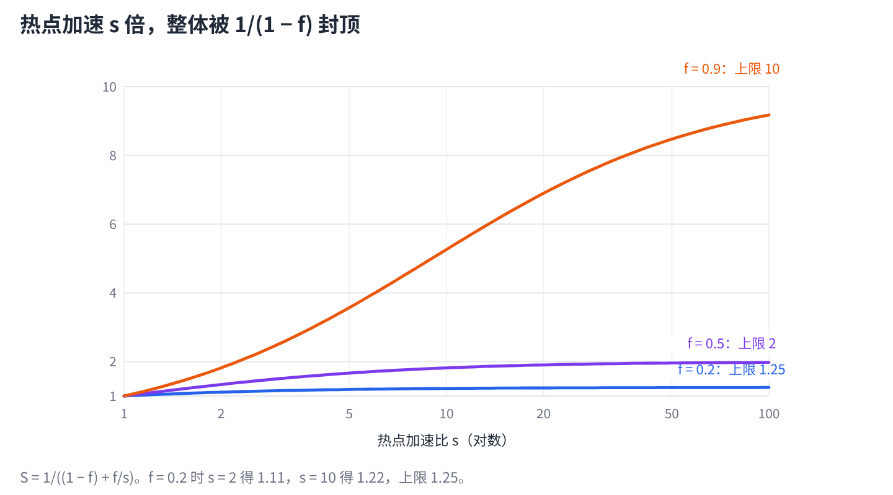
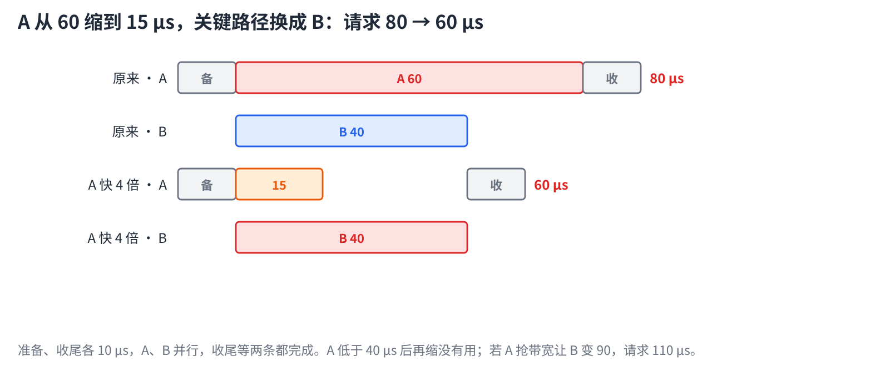
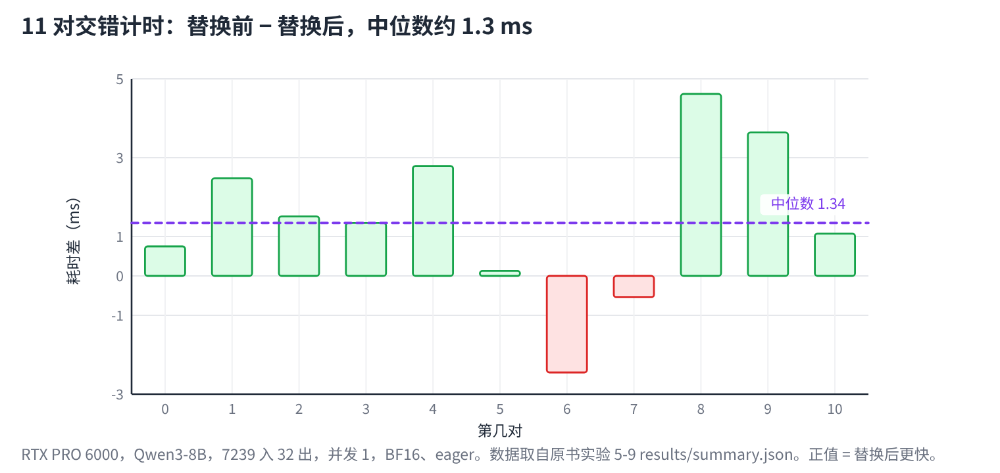
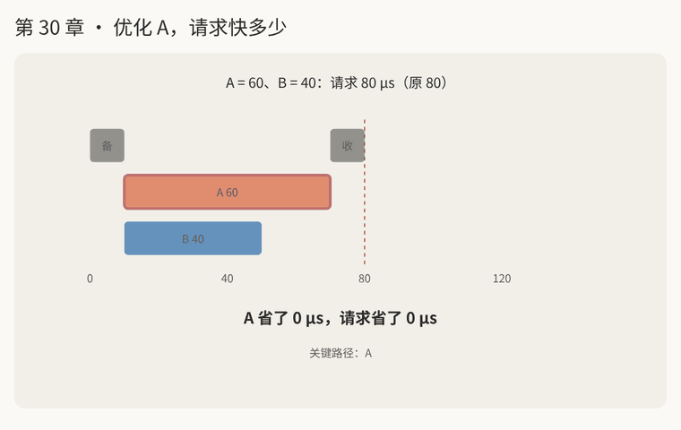

第 30 章 · 从局部优化到完整请求
本地运行
git clone https://github.com/wikieden/ai-infra-from-constraints
cd ai-infra-from-constraints/code/notebooks
pip install jupyterlab torch numpy
jupyter lab ch30_request_view.ipynb也可以下载后直接用 VS Code 打开 .ipynb 运行。需要 GPU 的章节在 Colab 里选「代码执行程序 → 更改运行时类型 → GPU」。
本章回答：一个 kernel 快了 2.6 倍，用户等的时间少了多少？两条分支并行时，优化其中一条为什么会突然不再有用，甚至让请求变慢？第 5 部分讲的分块、融合、图重放，放回一次真实的 Qwen3 请求里各值多少？
讲解日期：2026-11-24 · 上一章：第 29 章 运行时 · 下一章：第 31 章 从单卡到多卡
对应原文：materials/ai-infra-book/manuscripts/05-算子与运行时.md§5.6 L906–L974（图 5-38 到 5-40）、常见误区 L975–L984、本章小结
本章缩写：SwiGLU = Swish-Gated Linear Unit（Swish 门控 / 线性 / 单元，\(\operatorname{SiLU}(G) \odot U\)）· eager = 主机按程序顺序逐项提交加速器工作。全部缩写见 缩写与术语表
第 25–29 章每项优化都有明确的作用对象：分块减重读，融合减中间读写，运行时减准备和等待。但一次请求里还有别的工作。本章把局部节省放回整个请求。
讲解
第一步：热点占多少，决定能快多少（2026-11-24）
类比：上班通勤。 地铁 20 分钟、走路 80 分钟。地铁再快，一路上最多省 20 分钟。
原文 L912–L920（Amdahl 定律，第 4 章）：串行阶段、热点占原时间 \(f\)、热点加速 \(s\) 倍：
| 热点占 20%，加速 | 新时间 | 整体加速 |
|---|---|---|
| 2 倍 | 0.90 | 1.11 |
| 10 倍 | 0.82 | 1.22 |
| 无穷（耗时为 0） | 0.80 | 1.25（上限） |

图 30-1 · 三条线是 f = 0.2、0.5、0.9。热点越快，其他阶段在总时间里占比越高。
一句话：局部加速的上限是 \(1/(1 - f)\)；先量热点占比，再决定值不值得优化。
第二步：并行分支：关键路径会换人（2026-11-24）
类比：做饭等两个锅。 炖肉 60 分钟、煮饭 40 分钟，同时开火，开饭时间看炖肉。把炖肉改成高压锅 15 分钟，开饭就看煮饭了；高压锅再快也没用。要是高压锅还把燃气抢走、煮饭变成 90 分钟，开饭反而更晚。
原文 L924–L938：准备 10 μs，然后 A、B 并行，收尾 10 μs 要等两条都完成：
| 情况 | A | B | 请求 |
|---|---|---|---|
| 原来 | 60 | 40 | 80 μs |
| A 快 4 倍 | 15 | 40 | 60 μs（A 省 45，请求只省 20） |
| A 再快 | → 0 | 40 | 停在 60 μs（A = 40 是交点） |
| A 抢带宽，B 变慢 | 15 | 90 | 110 μs（更慢） |

图 30-2 · 再往下缩只能优化 B，或者减准备和收尾。共享带宽的优化要连同邻居一起测。
存储上的节省也要放回整个执行（原文 L940–L944）：第 10 章讲过的 V4.1 让 38 个全局注意力层共用 4 份全局 KV，驻留降到 V4-Flash 的约四分之一，逐层读取却只少约 9%：共享状态不必每层存一份，但每一层仍要读它。少占的容量不等于少读的字节。 同样，候选池的参考实现先算完整索引再屏蔽池外，生产实现在发起计算时就跳过，同一规则两种成本。
一句话：优化一个分支，节省要放回依赖图；关键路径换人后再优化它就没用了，共享资源还可能让别的分支变慢。
第三步：一次 Qwen3-8B 请求的账（2026-11-24）
类比：给一辆车换更快的雨刷。 下雨天每分钟刷很多次，雨刷快了确实省时间；但整趟路程里刷雨刷只占一点点。
原文 L952–L971：RTX PRO 6000，Qwen3-8B，输入 7239 个 token，生成 32 个，并发 1，BF16、eager，36 层。每层每步一次 SwiGLU 激活（第 27 章的 \(Z = \operatorname{SiLU}(G) \odot U\)），共 \(36 \times 32 = 1152\) 次调用：
| 调用 | 形状 | 原 kernel | 换调度后的 kernel | |
|---|---|---|---|---|
| Prefill | 36 次 | 7239 行（共 260,604 行） | 约 11.2 ms | 约 11.2 ms |
| Decode | 1116 次 | 1 行 | 约 2.4 ms | 约 0.92 ms（2.6 倍） |
- decode 的调用是 prefill 的 31 倍，行数却小得多：小矩阵算得快，launch 和任务分配的开销更显眼（第 25、29 章）。
- 全部激活约 13.6 ms，占约 851 ms 采集区间的 1.6%：就算激活耗时归零，最多省 13.6 ms。
- 只 decode 部分变快，预计请求省约 1.4 ms。
- 实测 11 对交错计时：首 token 都约 436 ms，完整请求中位数 817 / 815 ms；配对差的中位数约 1.3 ms（0.16%），和预期相符；9 对变快、2 对变慢。

图 30-3 · 正值表示替换后更快。用配对差的中位数，而不是两组中位数相减：配对能抵消同一时段的背景波动。
decode 的改进发生在首 token 之后，所以首 token 时间仍由 prefill 决定；输出越长，单步省的时间累积越多。
方法：先数每种形状调用几次 → 算每次省多少 → 按依赖关系判断这些节省能不能缩短整个请求。
本部分的四个常见误区（原文 L975–L984）：
| 误区 | 反例 |
|---|---|
| 看 kernel 数量判断成本 | 图重放把主机提交 18 → 3 次，加速器仍执行 18 个 kernel；融合才把 kernel 减到 15 |
| 访问量最小的一定最快 | 注意力 K/V 块 64 → 1 行，少读 144 MiB，状态更新多约 41 倍 |
| 加缓冲就能提吞吐 | 两个槽已让搬移连续工作，第三个槽不能让搬移变快 |
| 稳态最快，总耗时就最短 | 跑 70 组：分桶 1.27 s，特化 1.38 s |
场景代码：配对测量请求耗时，交错顺序、取配对差的中位数（真实写法）：
import random, statistics, time
import requests
def one(url, payload):
t = time.perf_counter(); requests.post(url, json=payload).raise_for_status()
return time.perf_counter() - t
diffs = []
for _ in range(11):
order = [("old", OLD_URL), ("new", NEW_URL)]
random.shuffle(order) # 轮内顺序随机
t = {name: one(url, PAYLOAD) for name, url in order}
diffs.append(t["old"] - t["new"]) # 正值 = 新的更快
print(f"配对差中位数 {1e3 * statistics.median(diffs):.1f} ms")
一句话：kernel 快 2.6 倍，请求只快 0.16%；先数调用、再算每次省多少、最后看关键路径，才知道用户少等多久。
动画演示：优化 A，请求快多少

可交互版：animations/30-request-view.html（滑块：A 的耗时 5–80 μs、B 的耗时 20–100 μs）。
怎么看：
- 准备、A 和 B 两条并行分支、收尾画成甘特图，较长的分支标红，就是关键路径（第二步）；
- 右边显示请求总时间、A 省了多少、请求省了多少；
- 播放时 A = 60 → 40 → 15，B 保持 40：请求 80 → 60 → 60；
- 最后一帧 A = 15、B 被抢带宽变成 90：请求 110 μs。
练习与作答记录
题 1（第一步）：热点占 35%，加速 3 倍，整体快几倍？热点耗时降到 0 时的上限是多少？
作答记录：（待作答）
题 2（第二步）：准备 5 μs，A、B、C 三条分支并行，分别 50、35、45 μs，收尾 8 μs。请求多久？把 A 缩到 20 μs 后呢？要让请求再短，下一个该优化谁？
作答记录：（待作答）
题 3（第三步）：沿用 Qwen3 的例子，decode 从 31 步增到 255 步，每步省的时间不变。激活一共能省多少 ms？（每步 36 层，每层省 \((2.4 - 0.92)/1116\) ms。）
作答记录：（待作答）
原书实验 5-9（L1021：127 步与图 5-38 的交点）。想多练可以做。
口诀
地铁再快，走路那段还得走；
炖肉快了看煮饭，抢了燃气饭更晚；
雨刷快两倍半，整趟只快千分之二；
先数次数，再算每次，最后看谁在关键路径上。
本章复习卡片
I116（Amdahl：热点 20% 的 1.11 / 1.22 / 1.25）、I117（两分支的关键路径 80 → 60 → 110 μs）、I118（Qwen3 请求：kernel 2.6 倍，请求 0.16%，配对中位数与四个误区）。练习做完后，按答错、卡住的地方再补。
附录 · 延伸阅读
留给以后深入学习用，不影响本章主线。★ 是建议先读的。
推荐阅读
| 读什么 | 读哪里 | 读它为了什么 |
|---|---|---|
| ★ AII 第 5 章 | §5.6 L906–L974、常见误区、本章小结 | 本章原文 |
| AII 第 5 章 | 历史与进一步阅读 L1025–L1107 | 编译器、运行时的来龙去脉 |
| 第 4 章 关键数字 | Amdahl | 第一步的前置 |
| 第 10 章 KV 怎么变小 ② | V4.1 共享全局 KV | 容量 vs 读取 |
| 《PyTorch 从里到外》第 23、24 章 | 性能方法、profiler | 怎么量热点 |
| 《CUDA 从线程到 Tensor Core》第 27 章 | 方法论 | kernel 优化放回系统 |
数学原理
- Amdahl：\(1/((1-f) + f/s) \le 1/(1-f)\)。
- 关键路径：DAG 上的最长路径；并行段取 max。
- 配对差：\(\operatorname{median}(a_i - b_i) \ne \operatorname{median}(a) - \operatorname{median}(b)\)，前者消掉同一轮的公共波动。
公式清单
| 公式 | 意思 |
|---|---|
| \(S = 1/((1 - f) + f/s)\) | 串行阶段的整体加速 |
| \(T = t_{\mathrm{prep}} + \max(A, B) + t_{\mathrm{tail}}\) | 两分支并行 |
| 节省 = 调用次数 × 每次节省（只算关键路径上的） | 请求级收益 |
代码对照：把本章的数字用代码算一遍
纯 Python，不需要 GPU。代码在仓库本地
ai-infra/solutions/chapter-code/ch30_request_view.py，配套测试tests/test_ch30.py：
bash cd ai-infra/solutions/chapter-code uv run python ch30_request_view.py # 一步一步打印 uv run pytest tests/test_ch30.py
讲义 ↔ 代码：
| 讲义 | 公式 | 写法 | 跑出来 |
|---|---|---|---|
| 第一步 Amdahl | \(1/((1-f) + f/s)\) | amdahl(0.2, s) |
1.11 / 1.22 / 1.25 |
| 第二步 关键路径 | \(\max\) | dag_time(10, a, b, 10) |
80 / 60 / 110 μs |
| 第三步 请求 | 计数 | 36 * 32、13.6 / 851 |
1152 次、1.6% |
关键几行：
def amdahl(f, s):
return 1 / ((1 - f) + f / s)
def dag_time(prep, a, b, tail):
return prep + max(a, b) + tail # 收尾等两条分支都完成
代码里才看得到的 3 件事：
amdahl(0.2, float("inf"))直接得 1.25：Python 里f / inf是 0。dag_time(10, 40, 40, 10)和dag_time(10, 1, 40, 10)都是 60：A 低于 40 以后再缩毫无作用。- 原文"decode 合计节省约 1.45 ms"用的是未取整的阶段时间；拿表里取整的 2.4 和 0.92 相减是 1.48。
自己改一改（不影响练习答案）：
- 把
dag_time推广成任意多条分支，再加一条"A 每快 1 μs，B 慢 0.5 μs"的共享带宽规则，求最优的 A。 - 用
amdahl画 \(f\) = 0.016（Qwen3 的激活占比）时 \(s\) 从 1 到 100 的曲线。 - 把第三步改成生成 1024 个 token，激活节省占请求的比例会变成多少（假设每步其他工作不变）？